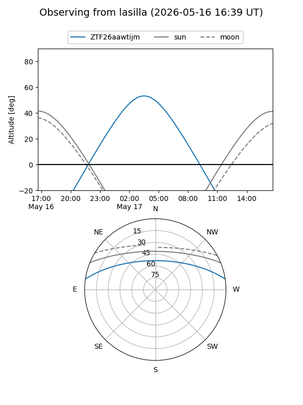
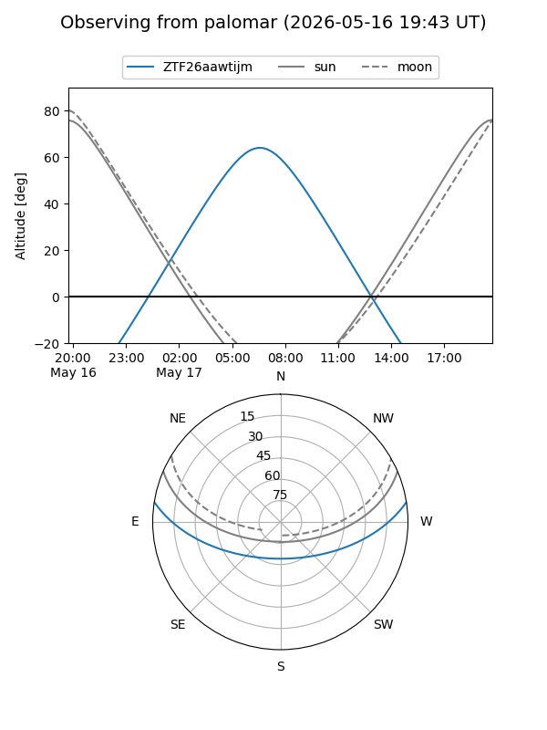

ZTF26aawtijm
Target ZTF26aawtijm at 2026-05-17 07:34
Aliases and brokers:
FINK: link
Lasair: link
ALeRCE: link
alt names
ZTF26aawtijm (ztf,fink_ztf)
Coordinates:
equatorial (ra, dec) = 216.3481,+7.57368
equatorial (HMS+DMS) = 14:25:23.54,+07:34:25.25
galactic (l, b) = (355.9755,+60.36829)
Flags:
Photometry:
last ztfg=19.93
1 ztfg detections
Lightcurve
Visibility


Additional plots